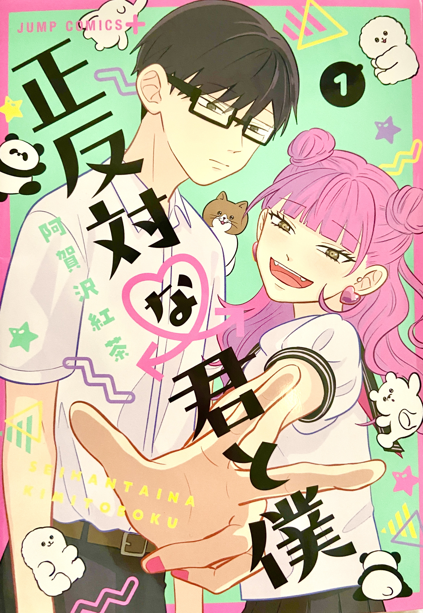

高校3年生の時に出会った、少年漫画のラブコメ作品です。
高校生たちの青春や人間関係が描かれており、その心情描写には強いリアリティがあります。
どのキャラクターにも愛らしさや不器用さがあり、一人一人に深く共感しながら物語を読んでいました。
この漫画は、自分にはなかった青春の景色や感情を鮮やかに見せてくれます。
登場人物たちの関係性を通して、人それぞれの考え方や価値観に触れ、“共感すること”の大切さを感じることができました。
著者：阿賀沢紅茶
出版社：集英社 出版年：2022年

高校3年生の時に出会った、少年漫画のラブコメ作品です。
高校生たちの青春や人間関係が描かれており、その心情描写には強いリアリティがあります。
どのキャラクターにも愛らしさや不器用さがあり、一人一人に深く共感しながら物語を読んでいました。
この漫画は、自分にはなかった青春の景色や感情を鮮やかに見せてくれます。
登場人物たちの関係性を通して、人それぞれの考え方や価値観に触れ、“共感すること”の大切さを感じることができました。